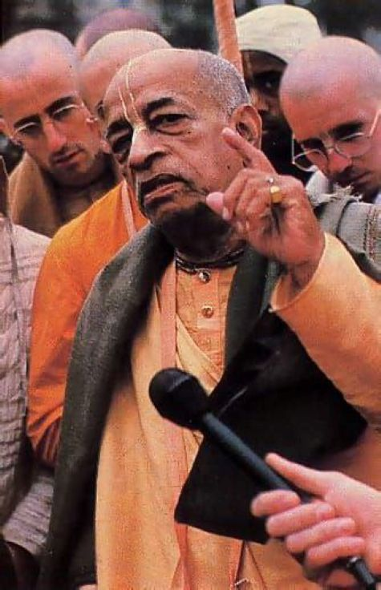

A Press Conference

We arranged a press conference for Prabhupād, and quite a few reporters came.
“Swamiji, you are an ascetic and you are preaching about renunciation of the material world. Yet you are sitting in luxury in the Hong Kong Hilton. Isn't that hypocritical?”
Prabhupād started philosophically. “First you must understand what is renunciation. Nothing is ours. Everything belongs to Krsna. What is harm if Krsna's servant uses Krsna's opulence to glorify Krsna?”
Prabhupād noted that the reporter wasn't satisfied and took another tact. “Personally, I am not attached. I could live under a tree and be satisfied.”
The reporters interest increased with the mention of living under a tree. Perhaps he had a human interest story.
“But” Prabhupād added, “If I was living under a tree and called a press conference...” Prabhupād paused for a moment to allow the situation he was describing to capture the reporter's imaginations, “and if I invited all the reporters, would you have attended?”
Everyone laughed, Prabhupād's example made Yukta-vairagya clear: using Krsna's opulences in Krsna's service was practical renunciation.
Ref ~ Hong Kong 1974 part II, pg. 200-201, My Glorious Master by Bhūrijana dasa.